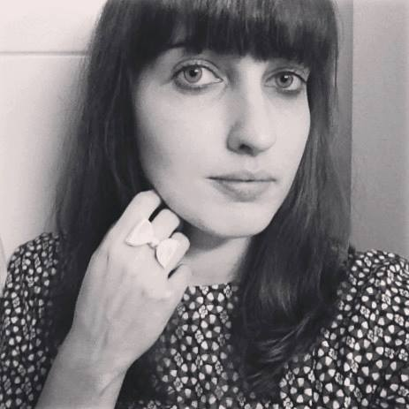
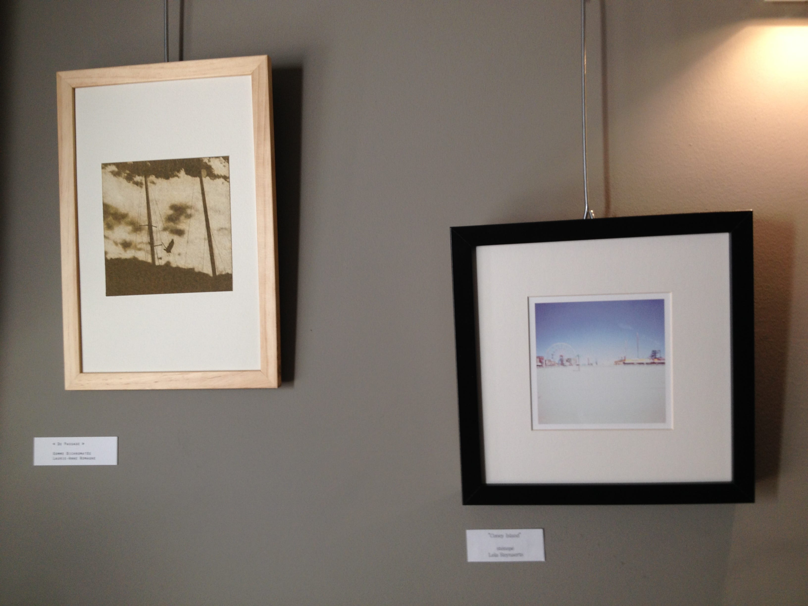
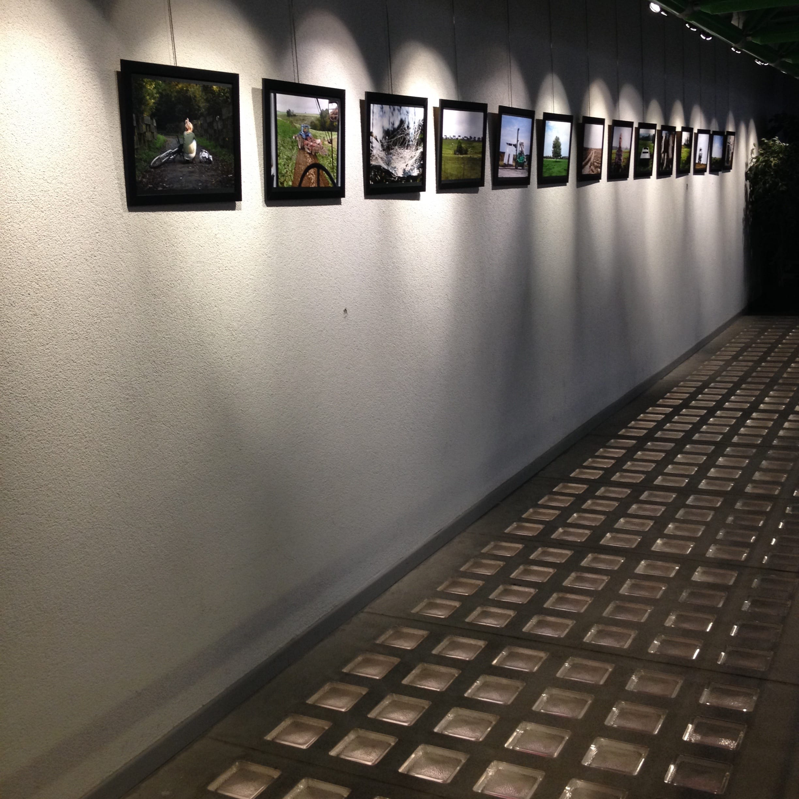
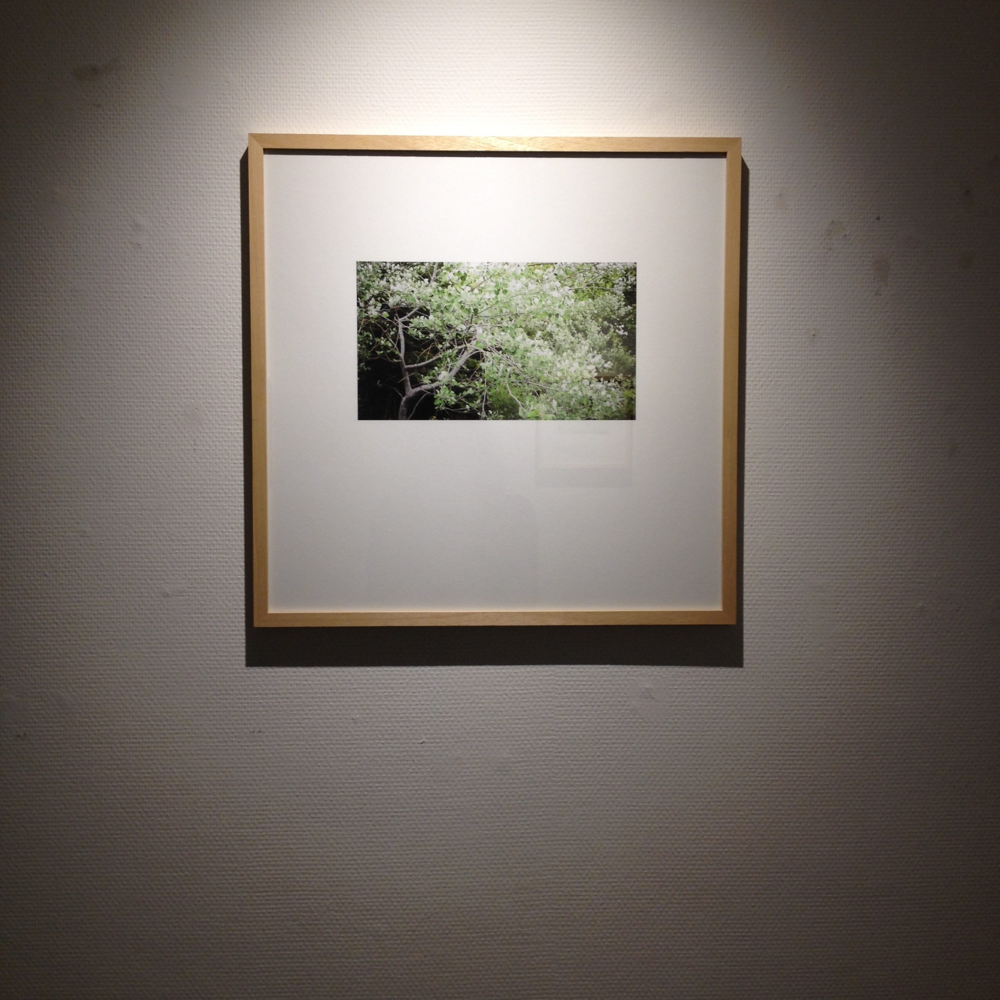
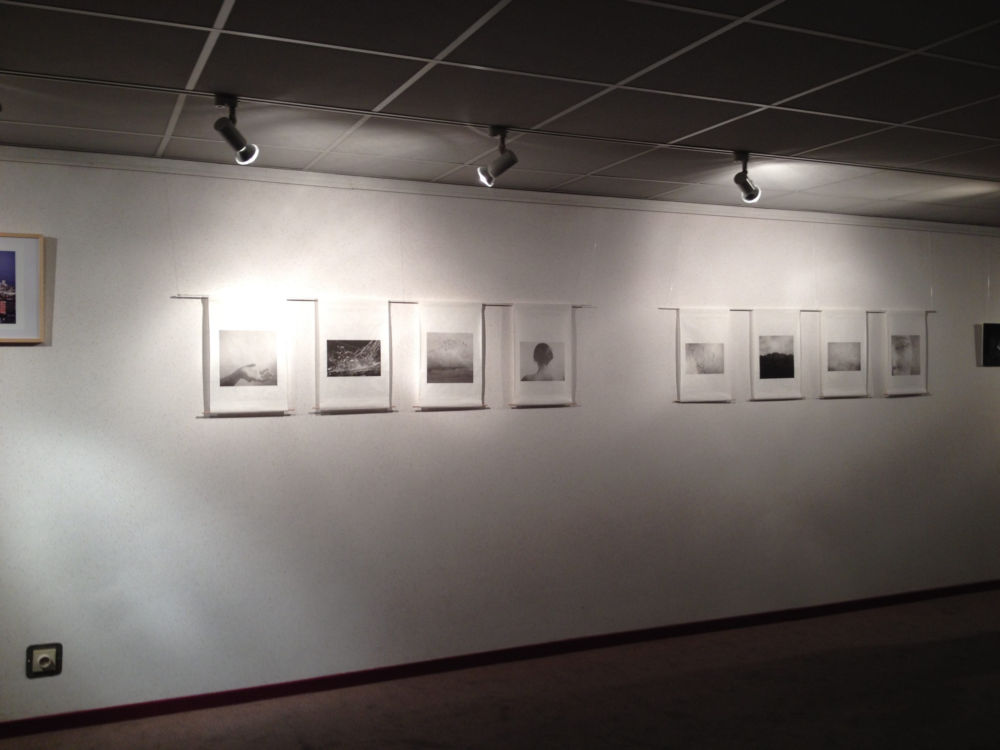
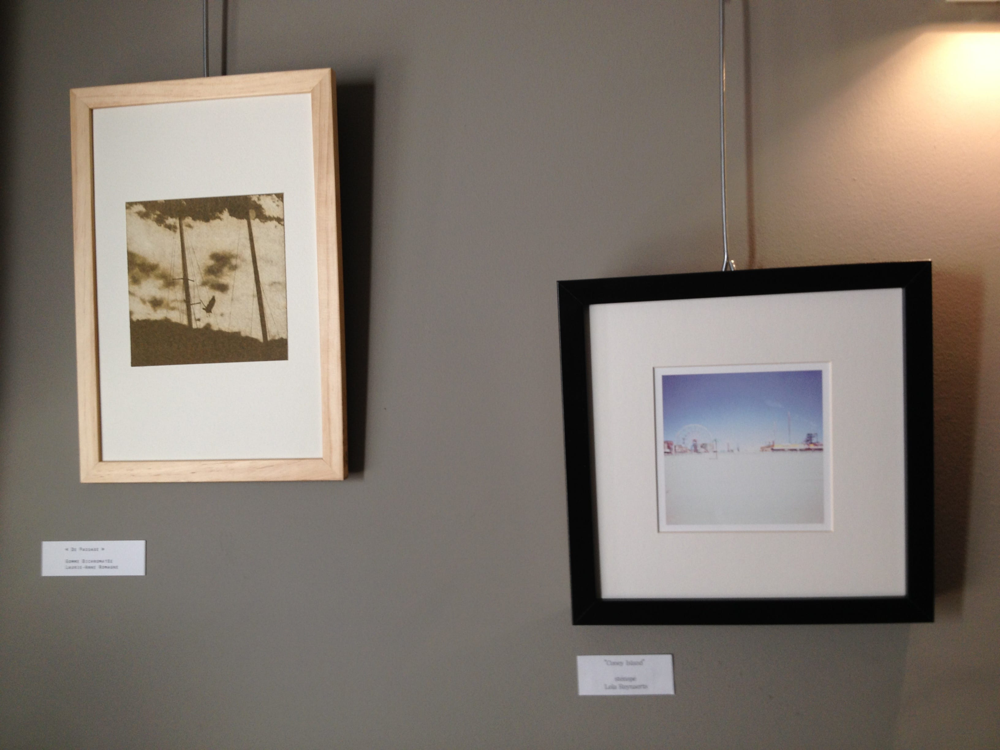
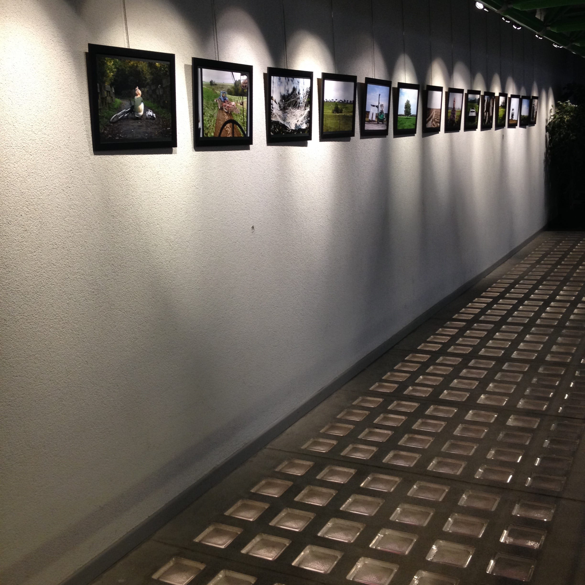
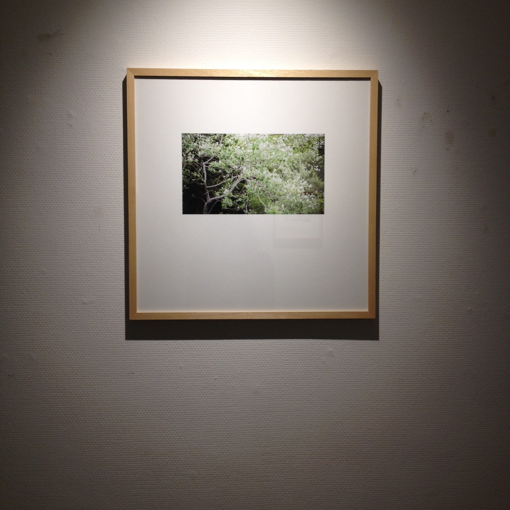
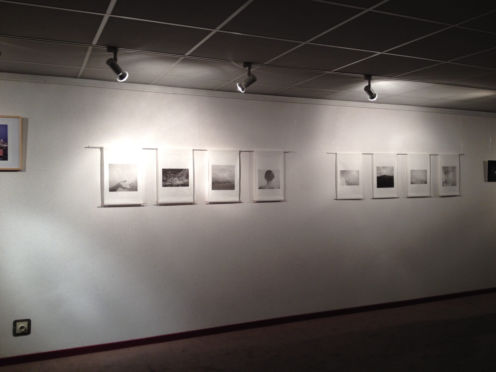

Des informations à propos de Laurie-Anne Romagne
À propos de moi
Je pratique depuis plusieurs années une photographie d’auteur à tendance autobiographique et poétique.
Je réalise également des reportages sur divers sujets de proximité, aussi bien pour des professionnels que pour des particulier. Mon activité photographique est ainsi très diversifiée.
J’aime varier et expérimenter diverses techniques de prise de vue et d’impression : numérique, polaroid, photographisme, gomme bichromatée…
Je reste à votre disposition via le formulaire de contact
pour toute information !

 






